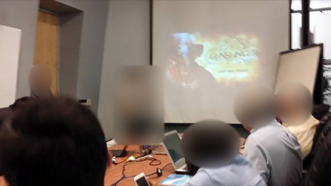

About / Curriculum vitae
I’m Jongho,
a student at SNU.
Child Development and Family Studies undergraduate with an interest in computing.
A little background
I started making games at Korea Game Science High School. I now study Child Development and Family Studies at Seoul National University, where I’m also taking computer science courses. Alongside my studies, I work as a teaching assistant at a math academy.
Presenting a game at Plug and Play
In 2014, a friend and I made a 3D puzzle game at an entrepreneurship camp.
In 2015, I presented a horseback riding game to investors at Plug and Play during a school visit to Silicon Valley. We couldn’t bring the riding simulator with us, so I showed a video of someone playing the game and gave the presentation in English.

Education
- Korea Game Science High School
- Graduated. Developed games using Unity and Cocos2d.
- Seoul National University
- Entered March 2024. Second-year undergraduate as of fall 2026.
Major: Child Development and Family Studies
Programming languages: Python, C, C++, and Java.
Experience
호형훈제수학연구소 | Teaching assistant, December 2024 to present
Assist students in class and answer their math questions.
Daehwa High School | Social service personnel, December 2022 to September 2024
Assigned to a special education classroom.
Campus activities
SCSC
Contributed to a course review collection project with the SNU Computer Study Club.
C!SL
Gave presentations and exchanged feedback with members from March to December 2025.
Selected work
AI and learning projects ↗
An interactive interview exhibit, a written-answer study app, a math review tool, and a family therapy simulation.
course-material-sync
A public CLI for syncing course files and preserving earlier versions.
Campus Smash
A released 3D browser game set on Gwanak campus, playable on PC and mobile.
AgingAndFamily
A study site connecting readings, questions, and source evidence.
Care Review Office
A Unity document-review game with a local build. I directed revisions to typography, labels, and player-facing controls; Steam release and external playtesting remain unfinished.